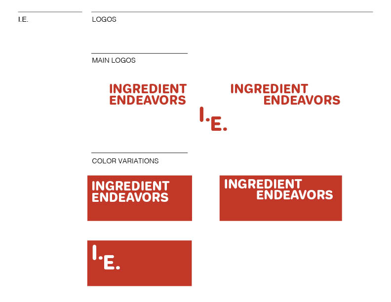
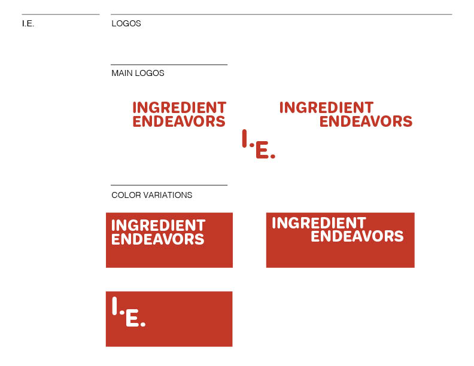

Style Guide
The style guide for I.E. is inspired by the color palette that commonly occurs in food, reds and yellows. While developing my project and trying to decide the best direction to take, I went to my local co-op abd took photos of produce. The second page of my guide is the photo I chose to move forward with. I added it, along with others, to a color palette generator.


 

Illustration
Artwork is created with gouache paint. Gouache is the main medium I use for illustrating. For this project I created very loose sketches that I had transferred to watercolor paper and painted over. Then re-drew a darker outline over the original transfer. The result is intended to look "gesturely".


Info-Graphic
This info-graphic is based on the collected data from my 73 weeks of meal planning. It is a representation of the number of cuisines repeated over that time in number and percentages. They are separated into two categories, mains and sides.

Prototype